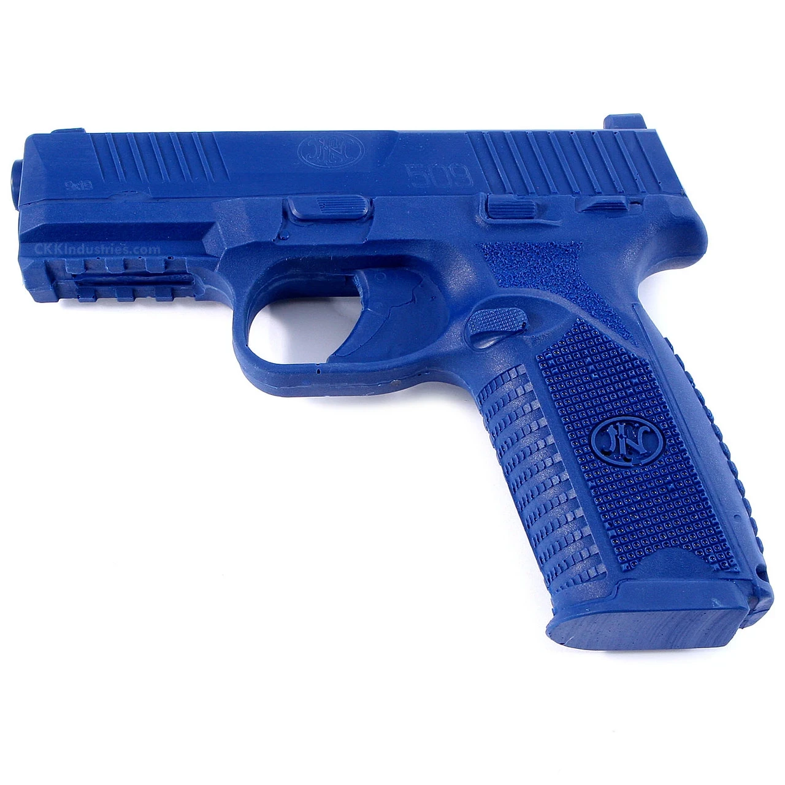
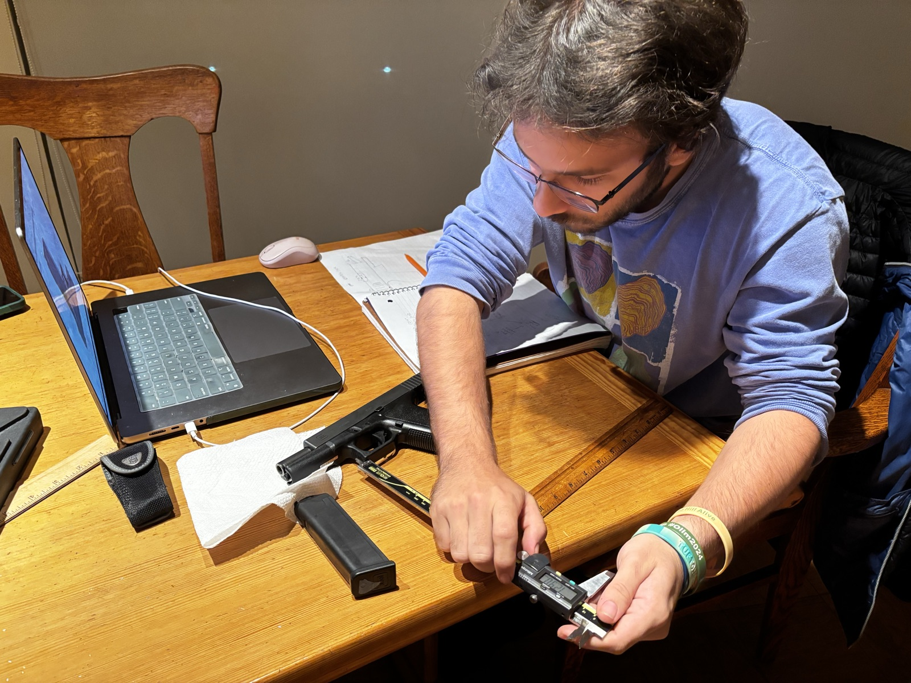
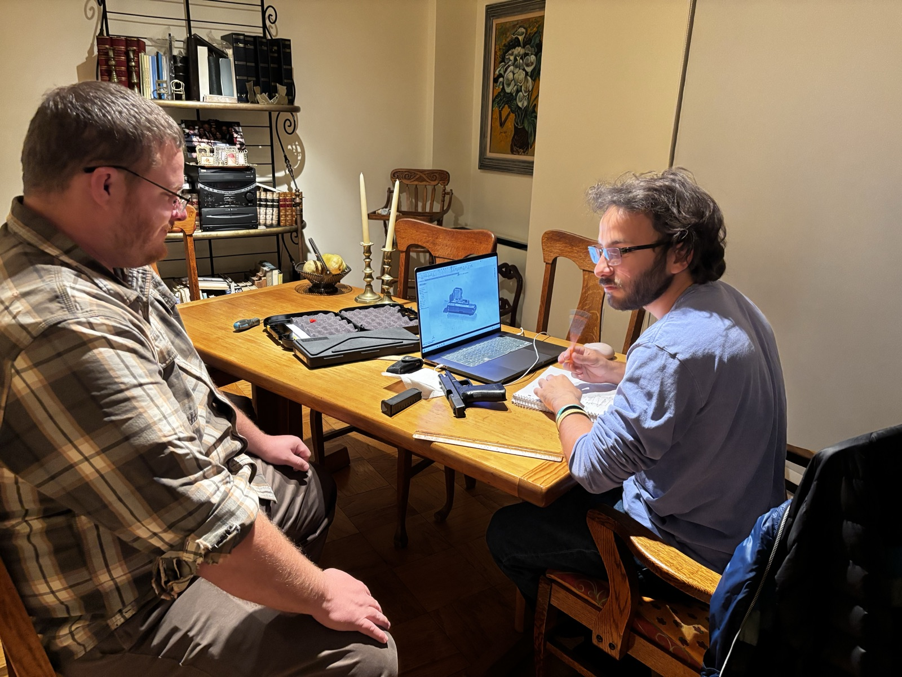
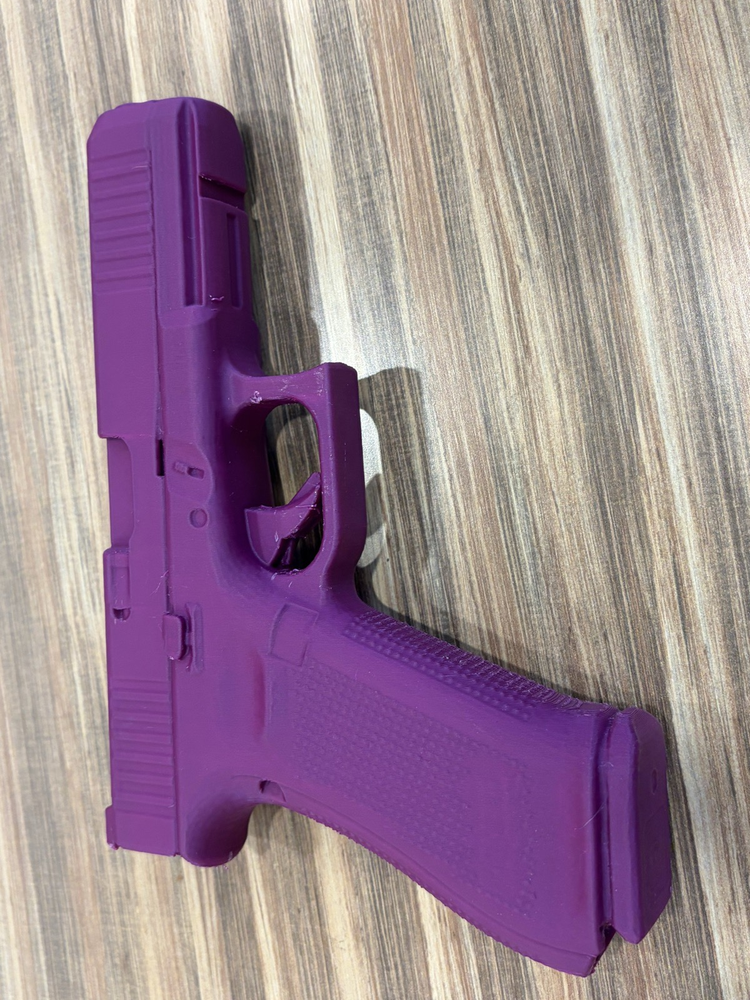
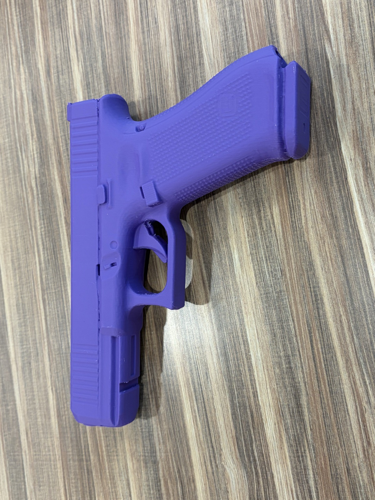
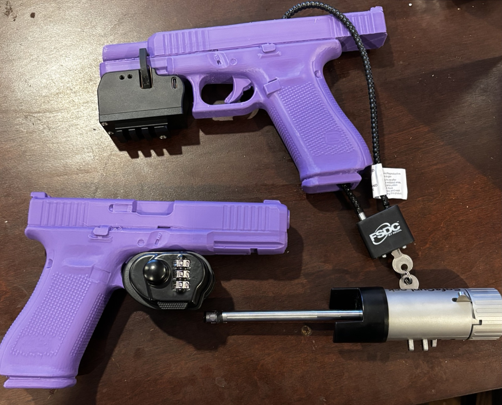
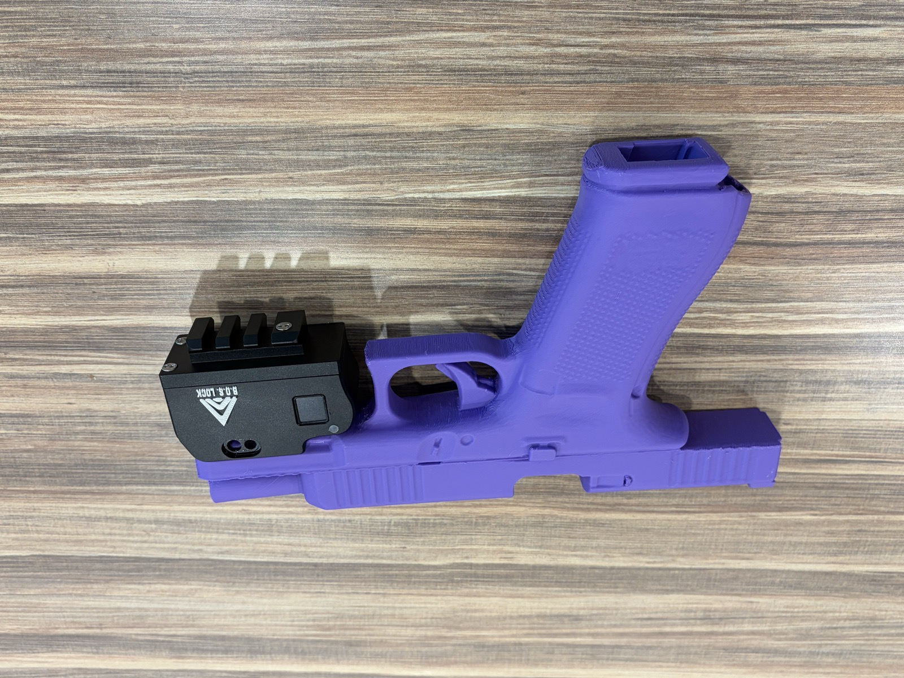
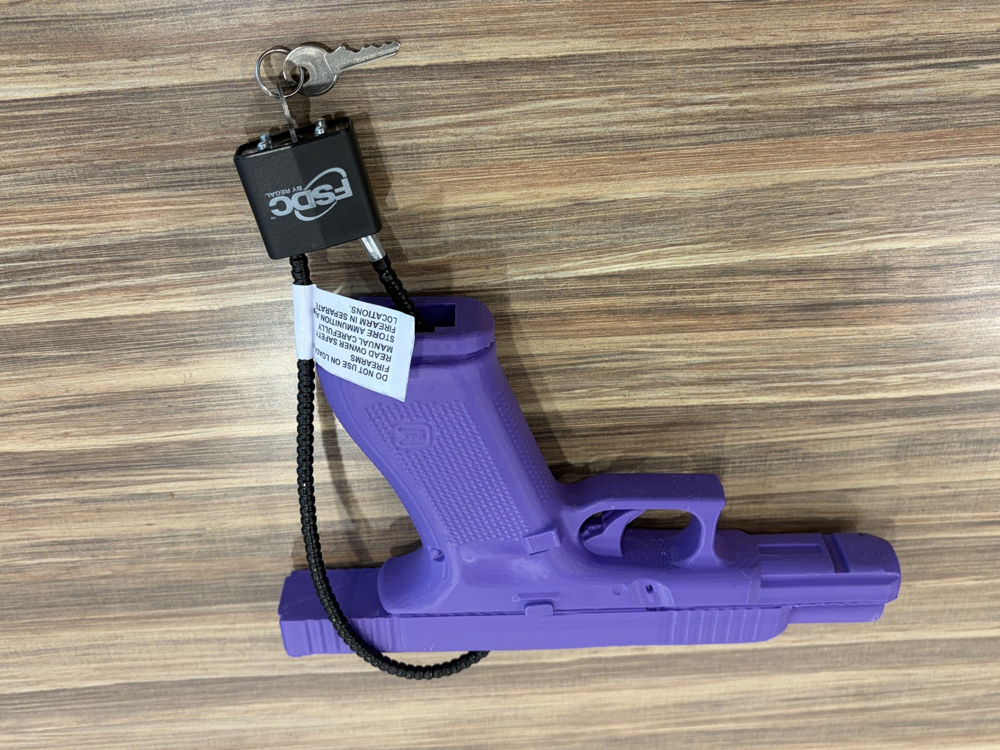
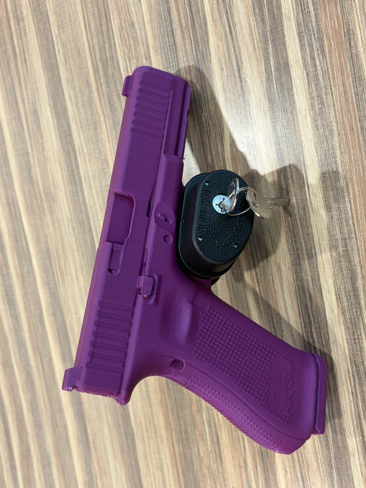

Inert Firearm Models
Full-size, 3D-printed Glock-17 replicas for a firearm safety study. Unlike solid training replicas, these have an open barrel, magazine well, and chamber, so barrel, cable, trigger, and biometric locks can all be installed and tested on them.
Why Was This Needed
Unlocked firearms at home cause accidental deaths and injuries. Even a simple lock greatly lowers that risk.
People want to try a lock before they use one, and most locks need real firearm geometry: trigger locks close around the trigger, barrel locks go into the barrel, and cable locks run through the magazine well.
The usual stand-in, a solid "blue gun," has none of those openings. These models do, so any lock can be tested and new ones prototyped safely.

Blue gun training replica: solid throughout, so most locks won't fit.
Requirements
Reverse Engineering the Reference

Measuring the reference pistol.
The starting point was a base STL model of the pistol. As a mesh, it had no reference geometry to work from, so I measured a real pistol instead. Its owner, a safety instructor, supervised while I recorded several hundred dimensions with calipers, focusing on the features the locks interact with: the trigger guard, barrel, magazine well, and chamber.
Those dimensions drove every change to the STL. Having the pistol and its owner at the table meant any feature that looked wrong in the model could be re-measured right away.

Reviewing the CAD model with the instructor.
Modeling and Printing
The models are built in SolidWorks and printed with fused deposition modeling. Printing keeps each revision cheap and fast, so feedback from the research team, clinicians, and end users on weight and feel can go into the next print within days.

Printed model, right side.

Printed model, left side.
Fitting Safety Mechanisms
Each model was checked against the storage devices used in the study. Every device mounts on the model the same way it would on the real firearm.

Two models with all four devices fitted.

Biometric lock.

Cable lock through the magazine well.
Barrel lock in the bore.

Trigger lock on the trigger guard.
- Role
- Mechanical Design Engineer
- Study
- FIRST STEP (Firearm Secure Storage Experiment)
- Research partners
- Massachusetts General Hospital, University of Connecticut
- Dates
- September 2025 to present